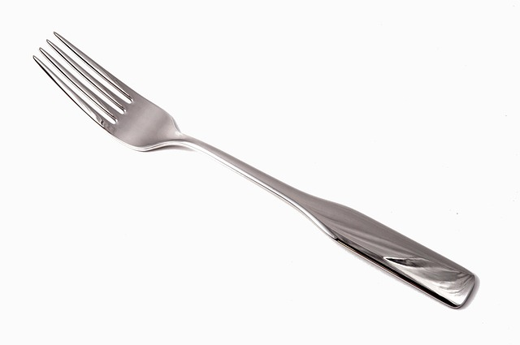

Objetos con Historia es un podcast que revela las fascinantes historias detrás de los objetos cotidianos que han cambiado el mundo. Desde electrodomésticos hasta herramientas revolucionarias, cada episodio combina historia, curiosidades y un toque de humor para descubrir cómo estos inventos moldearon nuestra sociedad.
Explora sus orígenes, las mentes brillantes detrás de ellos y los giros inesperados que los convirtieron en imprescindibles. ¡Dale play y sumérgete en un viaje donde lo cotidiano se vuelve extraordinario!
Descubre la sorprendente historia del tenedor, un utensilio que pasó de ser rechazado en la antigüedad a convertirse en una pieza esencial en nuestra mesa. Exploramos sus orígenes, evolución y su impacto en la cultura gastronómica.
